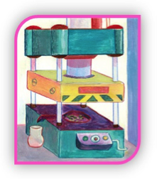

São várias as técnicas usadas para a separação dos óleos essenciais de plantas, flores etc., que se baseiam em suas diferenças de solubilidade, volatilidade e temperatura de ebulição. No entanto, a técnica mais comum, é a destilação por arraste de vapor (FIGURA 5).
Em virtude, da extração por solvente provocar uma baixa qualidade dos óleos essenciais extraídos, foram desenvolvidas técnicas modernas denominadas extração por fluido supercrítico. Esse método envolve o uso do gás carbônico (CO2) em um reator, onde é comprimido até atingir o estado líquido.

Atualmente os perfumes se classificam de acordo com a concentração de fragrância dentro do frasco, pois este fator influenciará na fixação do produto na pele. Assim, Eau de Parfum, é o mais comum nas prateleiras, possui concentração de 18 a 25% e pode durar na pele de 8 a 10 horas. O Eau de Toalete, ou deo-colônia, como é chamado no Brasil, tem concentração de 10 a 15% de fragrância, com duração de no máximo 6 horas na pele. Este produto é mais fraco e pode ser utilizado no dia-a-dia.

Durante essa aula, você aprendeu que os perfumes são uma mistura de óleo essencial, álcool, água e fixador. Que os perfumes podem ser produzidos a partir de folhas, raízes, caules, sementes, frutas e, flores. Assim, pesquise sobre as substancias odoríferas de algumas flores, como, as rosas, alfazema, violeta, jasmim e lírio, que são importantes na produção de perfumes. Verifique também, se existe o óleo essencial sintético que reproduza esse mesmo aroma.
Agora, para aprofundar seus conhecimentos nas técnicas de separação de óleos essenciais indicamos que assista ao vídeo do link abaixo, descrevendo as principais técnicas, bem como, as novas tecnologias utilizadas para a identificação dos óleos essenciais.
Vídeo:https://www.youtube.com/watch?v=IokaAZKVi9Q&list=PLYZIvxqPs9Q0tsThXM7Si_DqFf-EXtyU
Regras de formatação das respostas
1. Papel branco, formato A4 (210 mm x 297 mm);
2. Digitação em fonte tamanho 11 para o texto (Arial);
3. Máximo de 1 pagina;
4. Margens esquerda, direita,superior e inferior 2,5 cm;
5. Espaçamento 1,5 cm entre linhas, com texto em modo justificado.
Para uma melhor fixação da composição dos perfumes, escreva o que você entendeu sobre notas da cabeça, notas do coração e notas de fundo. Explique qual a função do fixador nos perfumes e do propileno glicol.
Regras de formatação das respostas
1. Papel branco, formato A4
(210 mm x 297 mm);
2. Digitação em fonte tamanho 11 para o
texto (Arial);
3. Máximo de 1 pagina;
4. Margens
esquerda, direita, superior e inferior 2,5 cm;
5. Espaçamento
1,5 cm entre linhas e texto em modo justificado.

DIAS, S. M.; DA SILVA, R.R.. “Perfume – uma química inesquecível”. Química Nova na Escola, n.4. p.3-6, nov.1996.
Disponível em: http//gnesc.sbg.org.br/online/qnesc04/quimsoc.pdf.
Acesso em 15,16.nov.2014.
Responsável: Professora Nidia Barone
Universidade Federal do Ceará - Instituto UFC Virtual